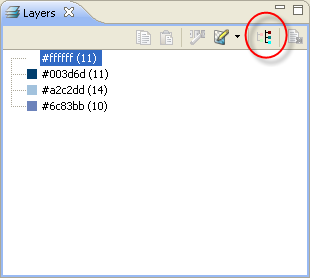

SVG Colorize for Multiple Icons
There is new toggle button "Show
common Colors" provided in the Layers View. This option allows
you to switch the color list of multiple icon selection from common
colours (the list will show only the colours which are used in all
selected icons) to all colour (the list will show all colours used in
all selected icons).

Figure: SVG Colorize Multiple
Icons